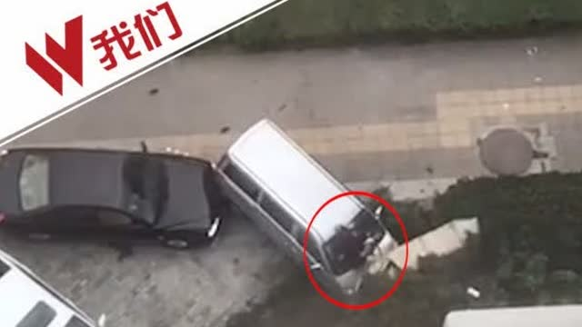

蛮荒故事现实版。再想想前几天的视频。@新京报我们视频:【两车发生剐蹭 男子发狂驾车冲撞乘车者致1儿童身亡】9月24日，郑州一男子驾车撞人，连续7次加速撞击，致1儿童死亡。据死者舅舅告诉记者，事发因两车剐蹭引发纠纷所致。监控视频记录下全过程：新京报我们视频的秒拍视频 @新京报  802万次播放 03:19
回复@且慢管家:但是如果想自己单买计划里已经有的，在且慢里可以自己加车。//@且慢管家:回复@桃枝么么:您好 暂时不能购买单支基金 只能买基金组合//@ETF拯救世界:回复@小韭菜V:也没有完全达到预期，因为买的还不够多。//@小韭菜V:回复@ETF拯救世界:回头一看，E大又说对了。@ETF拯救世界:$中证500 sz399905$ 一轮下探后，又回到了前期高点。手里的筹码比4月多了三份。所以，中证500的市值又新高了。怕什么坐电梯？不要怕。涨了好，跌了更好，可以让你多买，然后再次回来的时候，你又新高了。一个品种是这样，整个账户也是这样。多少年后，指数就算一点都没涨，你的账户也是永远上行的。艺术。
回复@恶人假mm://@恶人假mm:今天8.2卖了点//@ETF拯救世界:回复@litterwitch:7以上全部放掉。有再高也不要了。都是命。//@litterwitch:7天逆回购飙升啊//@ETF拯救世界:我真的笑出来了啊。港真，有点把持不住了呢。//@ETF拯救世界:还是不会买。不用费力气勾引我了。@ETF拯救世界:呵呵哒，别想骗我今晚买a股。图样了！
 新京报我们视频的秒拍视频 @新京报
新京报我们视频的秒拍视频 @新京报